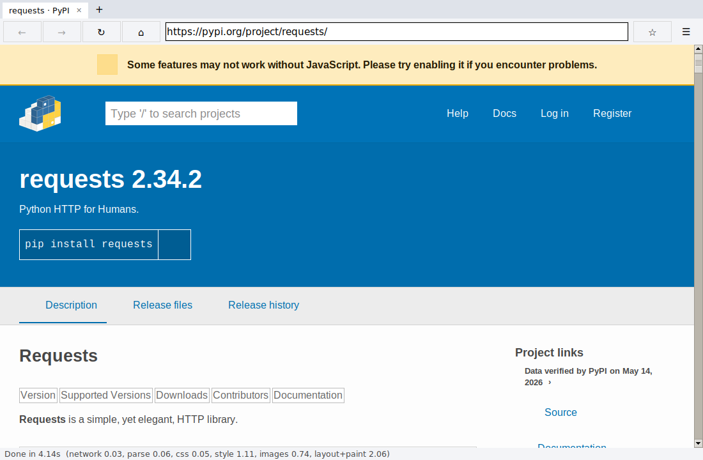
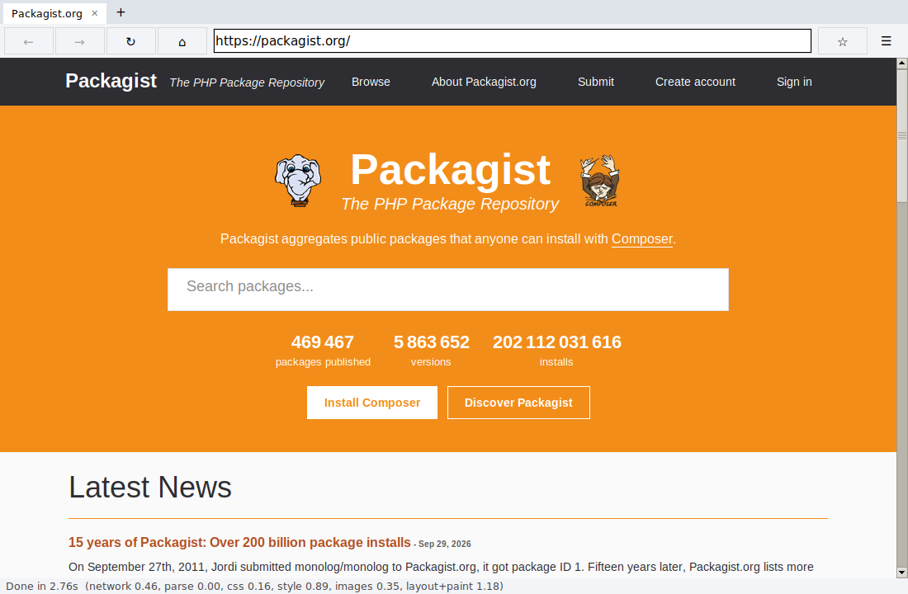

Architecture: how a URL becomes pixels
URLnetwork.py
→
HTTP(S) fetchredirects, cookies, gzip
→
HTML parsertokens → DOM tree
→
CSS parserselectors, @media
→
Cascadespecificity, inherit
→
Layoutbox tree, lines
→
Paintdisplay list
→
Tk canvasdraw + hit test
Fetching, parsing, styling and image decoding run on a worker thread; layout and painting run on the UI thread.
Libraries only for: sockets/TLS/HTTP framing (http.client, ssl), window + text drawing (tkinter), raster image decoding (Pillow). Everything else is our code.
What it can do
- HTTP/HTTPS, redirects, relative URLs, cookies, cache, gzip, charsets, GET/POST forms
- Forgiving HTML parser (implied tags, entities, bad nesting)
- CSS: external/inline sheets, @import, @media, cascade + specificity,
var(), calc(), ::before/::after
- Layout: box model, margin collapsing, inline text wrapping, inline-block, floats, lists, tables, flexbox, grid, absolute/relative positioning
- Paint: text, backgrounds, borders, PNG/JPEG/GIF images, SVG
- Tabs, back/forward, reload, scrolling, links, bookmarks, view-source, DOM/style inspector, network log
~7,000lines of our code
51automated tests
0crashes in fuzzing

pypi.org rendered by the browser (layout, flexbox, floats, clearfix, SVG logo)
Most ambitious feature
A real layout engine rather than a text dumper: one box tree handles block flow with margin collapsing, inline line boxes with baselines, floats that text wraps around, table column sizing from min/max content widths, flexbox grow/shrink, grid tracks and absolute positioning, all driven by computed styles. Plus our own SVG rasterizer (paths, arcs, transforms) so logos and icons show up.
Most important limitation
No JavaScript. Pages that build their content in JS (single-page apps) show only their static HTML. Also no web fonts (icons drawn with icon fonts are missing) and no z-index ordering. Documents nested thousands of levels deep show an error page because the layout is recursive.
How it was tested
- Unit tests for the parser, selectors, cascade, URLs and layout geometry
- A local HTTP server for redirects, gzip, cookies, charsets, 404s, POST
- End-to-end tests that click links, go back/forward, type into and submit forms in the real window
- Random malformed HTML/CSS fuzzing through the whole pipeline
- Screenshots of real sites (PyPI, RubyGems, Packagist, pkg.go.dev, Node.js) compared with how they should look

packagist.org: flex header, centred hero, search form